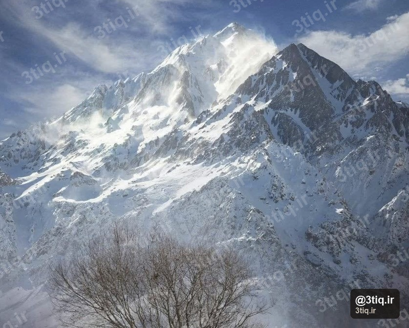

اشترانکوه (کوه شترپشت) با ارتفاع ۴۱۵۰ متر، یکی از مرتفعترین قلههای زاگرس در لرستان است. دشتهای سبز، آبشارها و پناهگاه کوهستانی، آن را برای صعود دو روزهٔ متوسط مناسب میکند.
این صفحه راهنمای صعود قله است (نه مقالهٔ عمومی وبلاگ). جزئیات نقشه و گالری در صفحه اشترانکوه.
۴۱۵۰m
ارتفاع
۲ روز
برنامه
متوسط
سختی
تابستان
فصل

مسیر صعود (ازنا)
- طول: حدود ۱۵ کیلومتر
- اختلاف ارتفاع: حدود ۲۲۰۰ متر
- زمان روز قله: ۸ تا ۱۰ ساعت
- شبمانی: پناهگاه اشترانکوه (≈۳۰۰۰ متر)
روز اول: ازنا تا پناهگاه از میان مراتع و آبشارها. روز دوم: صبح زود به سمت قله و بازگشت.
باران و تجهیزات
لرستان از پربارشترین مناطق ایران است. لباس و کاور ضدآب، کیسه خشک برای لباس شب و چادر با درزبند ضروری است — حتی در تابستان.
تجهیزات
- کفش کوه با آج خوب برای علفزار خیس
- چادر یا رزرو پناهگاه
- لایه گرم برای شب ۳۰۰۰ متری
- آب و برنامه آبرسانی
- چراغ برای شروع صبح زود
قلههای نزدیک
برای مقایسه در زاگرس: راهنمای دنا، راهنمای زردکوه.
📍 صفحه قله
مشاهده نقشه مسیر و گالری اشترانکوه ←